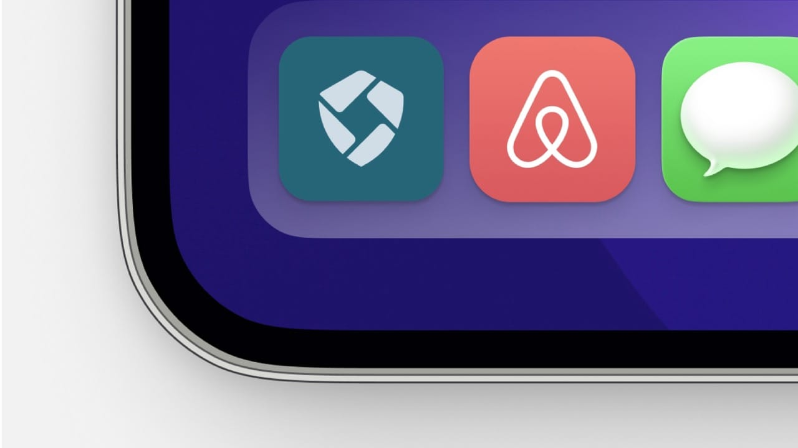

A shield-and-camera-frame logo for Skylark, the camera tech that sees through fog and smoke.
Skylark is a tech-driven startup that enhances camera visibility in foggy and smoky conditions. I designed a logo built on a protective shield with a square camera frame in negative space, signaling clarity, precision, and trust.

The brief: a mark for visibility in low-visibility conditions
Skylark is a tech-driven startup focused on enhancing camera visibility in foggy and smoky conditions. The brand needed a visual identity that reflected its technological edge, its commitment to protection, and its reliability when conditions are hardest.
The objective was a logo that could carry the brand's core themes of clarity and protection in a single compact symbol, holding up across tech interfaces and print while feeling clean, modern, and confident.


The idea: a shield with a camera frame in negative space
The identity connects technology and protection through form. The primary shape is a shield, symbolizing strength, protection, and the secure nature of Skylark's solution, with a square frame set into the shield that cleverly represents a security camera. That detail aligns the mark with vision, precision, and clarity.
Color carries the rest of the story. A tech-forward bluish green reflects innovation and trust, while light grey adds a sophisticated, modern contrast. A bold, modern sans-serif keeps the wordmark clean and confident, with a geometric outline giving the shield a modern, futuristic look.


The system: refined, tested, and built to scale
The logo was refined for sharpness at every size, with full lockup, icon-only, and horizontal variations plus monochrome and reversed color options. It was built to stay legible wherever the brand appears, from digital interfaces to print.
The result is a scalable system delivered with a brand usage guide and icon set, so teams can apply the identity consistently as the brand grows.
